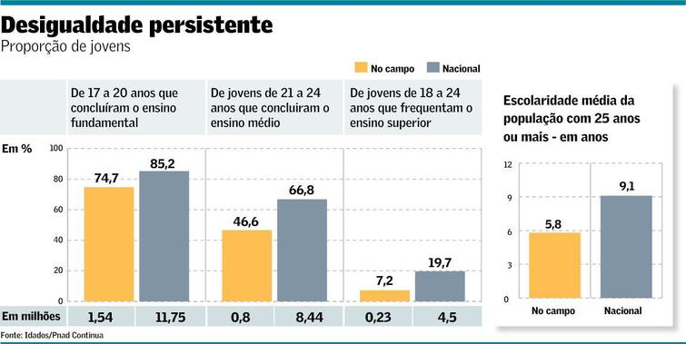

Apresentação do Tema
Bem-vindo ao nosso site sobre Economia Doméstica e Finanças Pessoais! Aqui, exploramos como gerenciar dinheiro de forma inteligente, integrando conhecimentos de Matemática (cálculos e gráficos), Geografia (consumo urbano e desigualdades regionais), Sociologia (cultura do consumo e impacto social) e Português (textos explicativos e glossário).
Objetivos: Estimular o pensamento crítico sobre finanças, promover organização financeira e criatividade digital. Navegue pelas seções para aprender e simular cenários reais.
Simulador de Orçamento Mensal
Use este formulário para calcular seu orçamento mensal. Insira sua receita e despesas (Matemática: cálculos de soma/subtração e porcentagens).
Dicas de Consumo Consciente
Práticas para um consumo responsável (Sociologia: cultura do consumo e impacto social nas comunidades).
- Planeje compras: Faça listas para evitar impulsos e reduzir desperdícios.
- Prefira produtos locais: Apoie economias regionais e diminua emissões de carbono (Geografia: espaço urbano).
- Reduza o uso de plástico: Opte por reutilizáveis para combater desigualdades ambientais globais.
- Eduque-se sobre preços: Compare valores e entenda inflação (Matemática: porcentagens).
- Invista em durabilidade: Compre itens de qualidade para economizar a longo prazo.
Infográficos com Dados Econômicos
Representações visuais de dados fictícios (Matemática: gráficos simples; Geografia: desigualdade regional).

Consumo Urbano vs. Rural (Porcentagem)
Glossário de Termos Financeiros
Definições claras para entender finanças (Português: produção textual explicativa).
- Orçamento
- Plano financeiro que organiza receitas e despesas.
- Receita
- Dinheiro que entra, como salário ou rendimentos.
- Despesa
- Dinheiro que sai, como contas ou compras.
- Inflação
- Aumento geral de preços ao longo do tempo.
- Poupança
- Dinheiro guardado para emergências ou metas futuras.
- Dívida
- Valor emprestado que deve ser pago com juros.
- Investimento
- Aplicação de dinheiro para gerar lucros.
- Porcentagem
- Fração de 100, usada para calcular proporções.
- Consumo Consciente
- Prática de comprar de forma responsável e sustentável.
- Desigualdade Econômica
- Diferença de renda entre regiões ou grupos sociais.